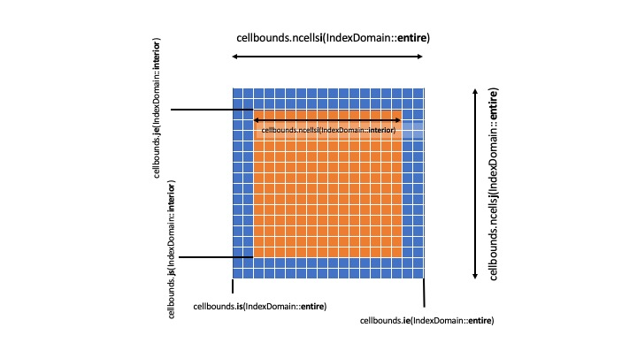

Domain
IndexShape Class
The index shape class provides access to the index bounds of a mesh
block. The bounds are split into several domains which can be accessed
using a class enum IndexDomain. The IndexDomain can be:
entire:which allows one to access the starting indices of the full meshblock including ghost zones
interior:which allows access to the interior of the meshblock excluding ghost cells
inner_x1:which accesses the ghost zones for “inner” face of a meshblock in the
x1directionouter_x1:which accesses the ghost zones for “outer” face of a meshblock in the
x1directioninner_x2:which accesses the ghost zones for “inner” face of a meshblock in the
x2directionouter_x2:which accesses the ghost zones for “outer” face of a meshblock in the
x2directioninner_x3:which accesses the ghost zones for “inner” face of a meshblock in the
x3directionouter_x3:which accesses the ghost zones for “outer” face of a meshblock in the
x3direction
The starting and ending indices of each dimension of the index shape can
be accessed using the is, ie, js, je, ks, ke
methods. Currently, access is limited to three dimensions, if needed it
can be extended. In cases where the indices are called often it may be
more conveneint to pull out the index bounds of a given domain. The
IndexRange struct provides an easy way to group the indices
together.
The IndexShape class also provides a means for accessing the number
of cells in each dimension of each of the domains. This is provided with
the ncellsi, ncellsj, and ncellsk methods.
Below is a diagram illustrating a 2d instance of an IndexShape which we will call cellbounds.

IndexRange Struct
The index range struct simply contains the starting and ending indices as well as a method for returning the total number of cells within the range.
Example Usage
The primary use case of the IndexShape occurs when indexing over the
different dimensions. Assuming we have a meshblock pointer given as
pmb e.g.
const IndexRange ib = pmb->cellbounds.GetBoundsI(IndexDomain::interior);
const IndexRange jb = pmb->cellbounds.GetBoundsJ(IndexDomain::interior);
const IndexRange kb = pmb->cellbounds.GetBoundsK(IndexDomain::interior);
for( int k = kb.s; k <= kb.e; k++ ){
for( int j = jb.s; j <= jb.e; j++ ){
for( int i = ib.s; i <= ib.e; i++ ){
... code ..
}
}
}